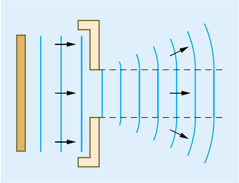

本章節中，我們將以水波介紹波的繞射現象。
當你在房間時，你有沒有想過爲什麽你會聽到大廳的聲音呢？
繞射（別稱：衍射）是波特有的特性。
當一列波經過障礙物邊緣時，會發生繞射。

當水波通過障礙物（通過縫隙或撞到障礙物）時，水波會偏折，發生繞射
在波發生繞射後，波長、頻率及波速均會保持不變，但傳播方向會改變。
當波的波長越大，波的繞射幅度會越大； 而通過的狹縫闊度越小，繞射幅度亦越大。
*狹縫的闊度與水波的波長相若時，繞射現象最清晰可見。
點我了解更多繞射的應用
GO BACK